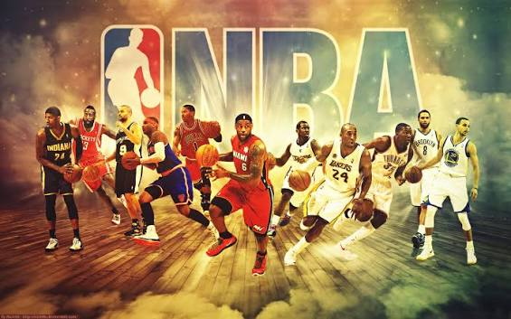

The National Basketball Association, known as the NBA, was founded in 1946. The league originally started with 11 teams and was called the Basketball Association of America (BAA). In 1949, the BAA merged with the National Basketball League (NBL), creating the NBA.
During the 1950s and 1960s, basketball became increasingly popular in the United States. The NBA continued to grow and attract talented players. The Boston Celtics became one of the dominant teams of this era, winning multiple championships.
The 1980s brought a new level of popularity to the NBA. Players such as Magic Johnson and Larry Bird became major basketball stars. In the 1990s, Michael Jordan and the Chicago Bulls helped make the NBA famous around the world.
Today, the NBA has 30 teams and attracts millions of basketball fans from different countries.